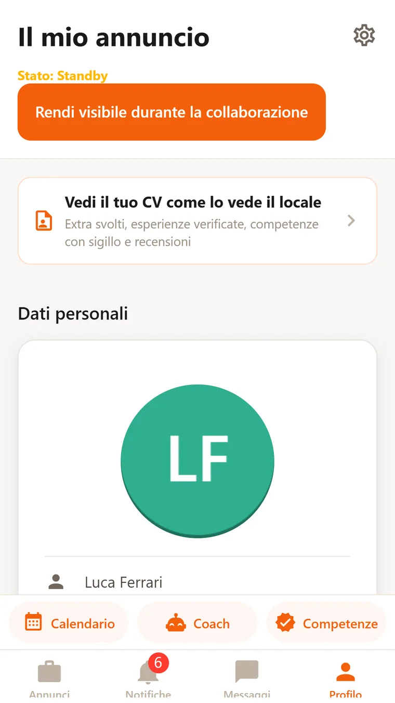
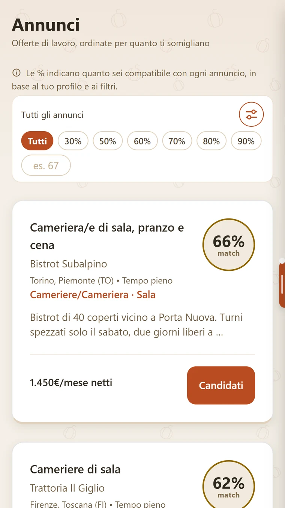
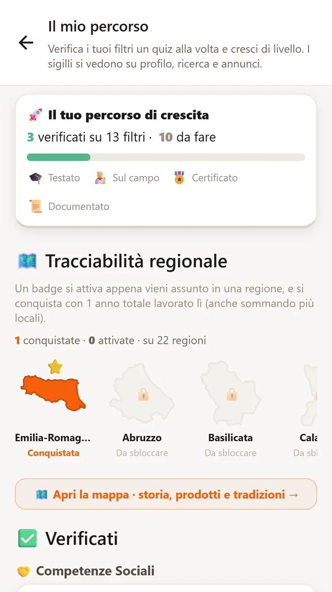
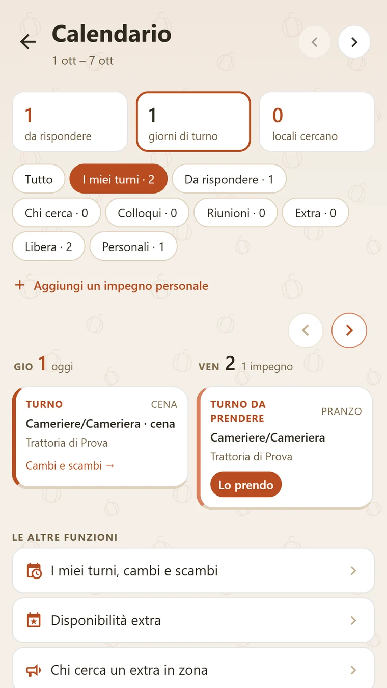
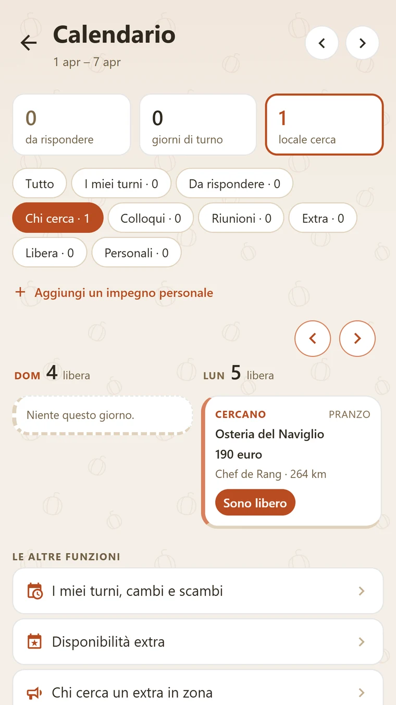
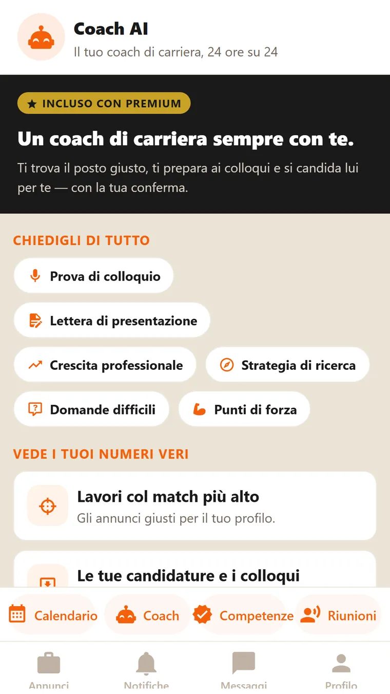

Sull'annuncio leggi ruolo, locale, contratto e retribuzione, e vedi quanto sei compatibile col tuo profilo. Cuoco, cameriere, pizzaiolo, barista, sommelier, aiuto cucina, manager, host.
Ruoli, aree, competenze, lingue con il livello, dove vuoi lavorare. Il locale legge il profilo, e dal profilo nasce la percentuale. Puoi importare il CV in PDF: l'IA lo legge e scrive le esperienze.

Sull'annuncio leggi ruolo, locale, contratto e retribuzione indicata, e vedi la percentuale di compatibilità col tuo profilo. Il numero ti aiuta a scegliere dove candidarti. Il colloquio resta una cosa fra persone. Puoi filtrare per soglia: dal 50% in su, dal 70%, dal 90%.

Elenchi le competenze del tuo ruolo. Per ciascuna puoi fare un quiz nell'app, preparato con l'IA, aggiungere un certificato o un documento. Il locale le vede sul profilo, e contano nella percentuale.

I turni che il locale ti assegna arrivano nel tuo calendario. Quando il locale invia i turni della settimana, ricevi una notifica con il riepilogo. Puoi proporre uno scambio a un collega: se accetta, decide il locale. Nello stesso calendario segni gli impegni personali e ricevi il promemoria.

Segni i giorni in cui sei libero per un extra. Vedi chi cerca un extra in zona e rispondi. Serata, ruolo e compenso li concordate in chat.

Il Coach legge il tuo profilo e le tue candidature e risponde alle tue domande: cosa migliorare, come prepararti a un colloquio, quali competenze aggiungere. È in abbonamento, si sceglie solo se serve.

No. Profilo, candidature, calendario ed extra sono gratis. Gli abbonamenti sono facoltativi, per esempio per avere il Coach IA, e i prezzi li vedi nell'app prima di qualsiasi acquisto. Per iscriverti non serve nessuna carta.
Nel modulo dell'annuncio la retribuzione è un campo obbligatorio: senza, il modulo non pubblica. La leggi sull'annuncio prima di candidarti. Se trovi un annuncio senza retribuzione, scrivimi e lo controllo.
La scelta è del locale, e non sempre risponde subito. Se scarta la candidatura, ti arriva una notifica con l'esito. Se non risponde, la candidatura resta in attesa. Intanto puoi candidarti ad altri annunci.
Il locale vede il profilo che hai pubblicato. Quali dati raccolgo e perché è scritto nella Privacy. L'account lo cancelli dall'app, in Impostazioni, alla voce «Elimina account».
Ti iscrivi, compili il profilo e vedi gli annunci ordinati per compatibilità. Candidarti non costa niente. Gli abbonamenti, per esempio per avere il Coach IA, sono facoltativi. L'account si cancella quando vuoi.
Per iscriverti non serve nessuna carta. Si paga solo quello che scegli nell'app, dallo store.